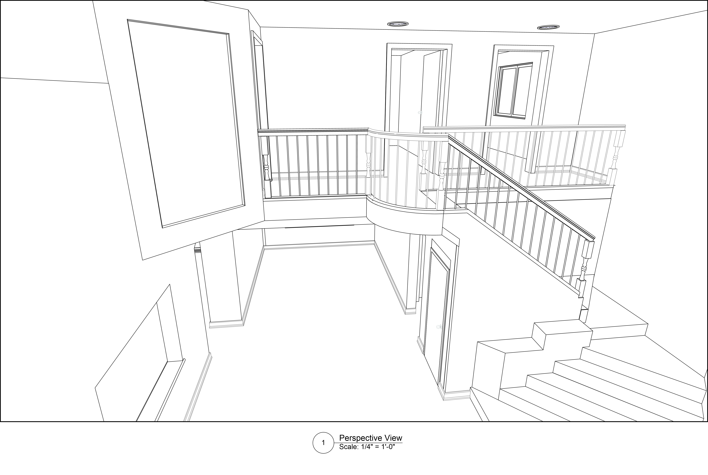
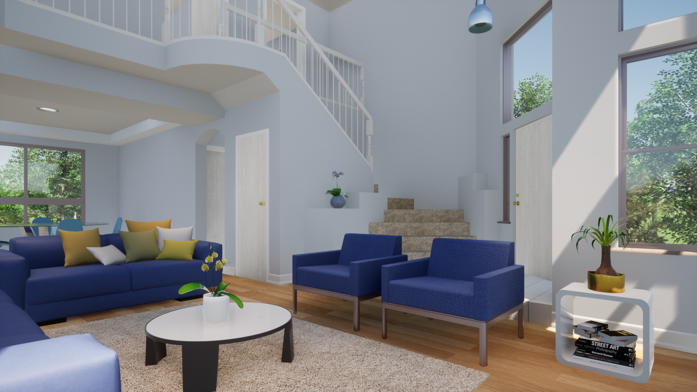
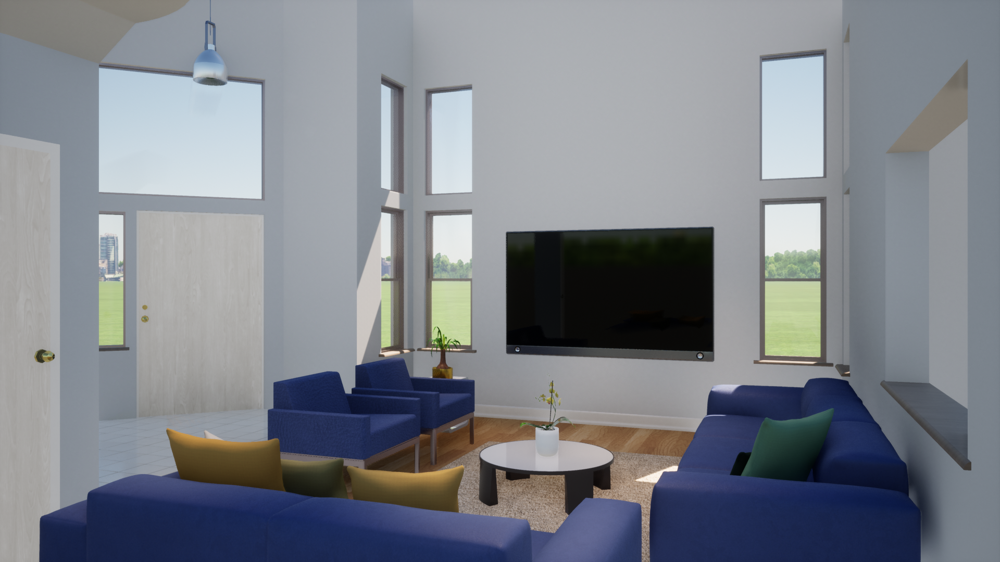
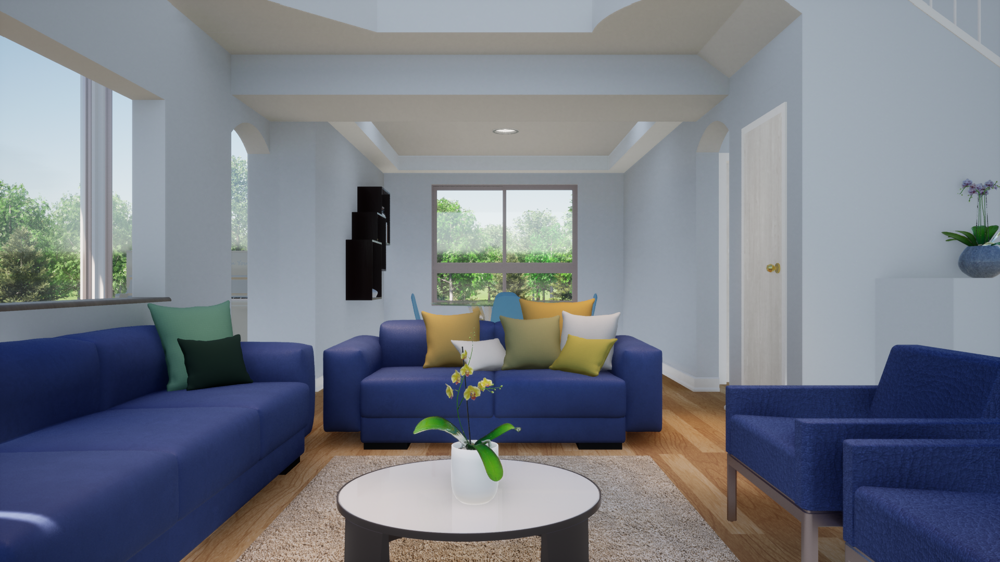
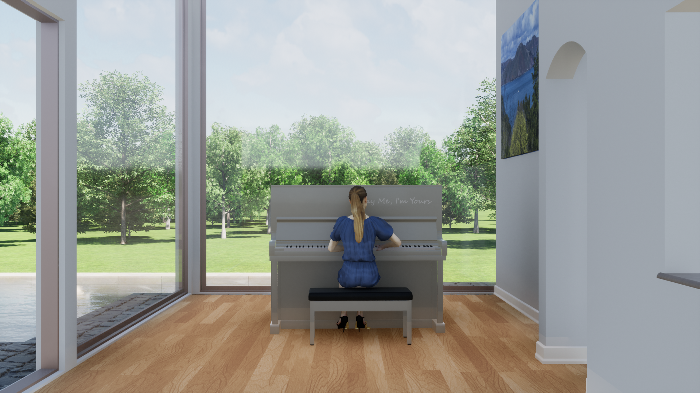
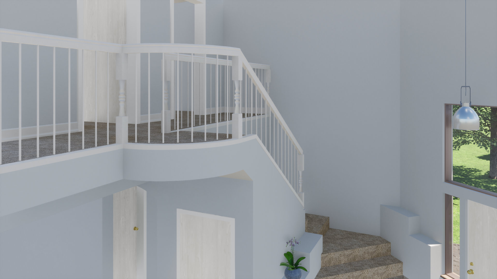

Home Remodeling Animation
This was a project that I designed to convey the beauty of an actual house in Elk Grove, California. There are many trees and natural environments in the Elk Grove, so I would like to add the natural exterior spaces outside of the house.
Process
Interior Survey Part Two
The survey part two was to create a 3D rendering model from the information I gathered during the interior survey. I focused on as much interior architectural detail that is necessary to represent the actual space. I used Vectorworks to create the main structure of the house, and then brought file developed in Vectorworks to Twinmotion for adding furniture and natural plants.
   By the end of the project, my professor allowed us to be OpenMind, so that means I could change the structure of the house to make it look more attractive. Therefore, I modified some structures in the house, and added big windows next to the living room, because I would like to let the viewer see more the natural environment outside of the room.
Lessons Learned
Because I had to measure all dimensions from the actual space, I learned how the original designer did the alignment and symmetry works among interior spaces. I also admired the curvilinear stair created by the original designer. Normally, I would just pick a regular stair, such as L shape or U shape stair from Vectoworks to fit the space. However, after building the model, I understood how the designer utilized the limited spaces to design an elegant interior space by adding a irregular shaped stair.
